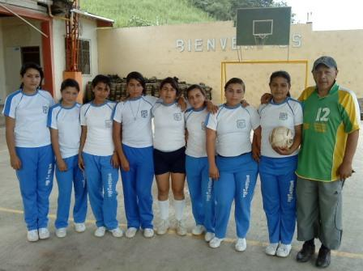

OBJETIVOS
1. OBJETIVOS GENERALES:
Propender por una formación integral y de calidad.
Brindar espacios de participación comunitaria con el fin de mejorar la convivencia y el desarrollo regional.
Conservar y aprovechar los recursos que brinda la naturaleza de la región y el medio ambiente en general.
2. OBJETIVOS ESPECIFICOS:
Vincular entidades gubernamentales y no gubernamentales cuya misión sea el desarrollo del sector campesino y la protección de los recursos naturales.
Crear conciencia sobre la crisis ambiental y organizar un plan de estudios para enfrentarla, desde la óptica de la educación.
Integrar los diferentes entes de la comunidad educativa con el fin de plantear alternativas para la solución de la diversa problemática detectada.
Brindar espacios a la comunidad para la educación formal e informal para el aprovechamiento del tiempo libre.
Ejercer una administración basada en la concertación y el diálogo.